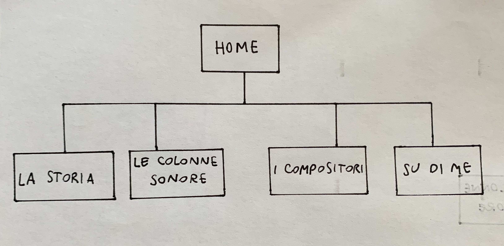
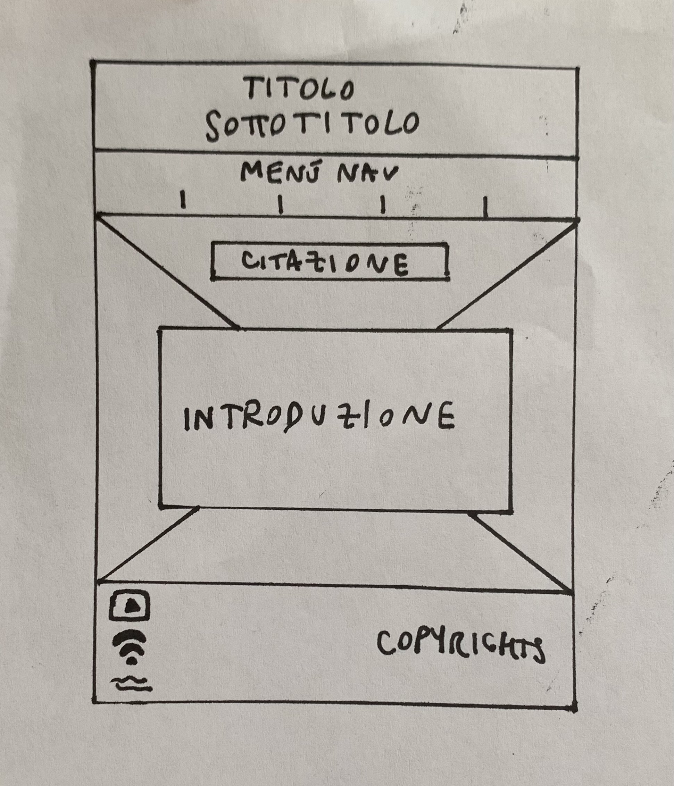
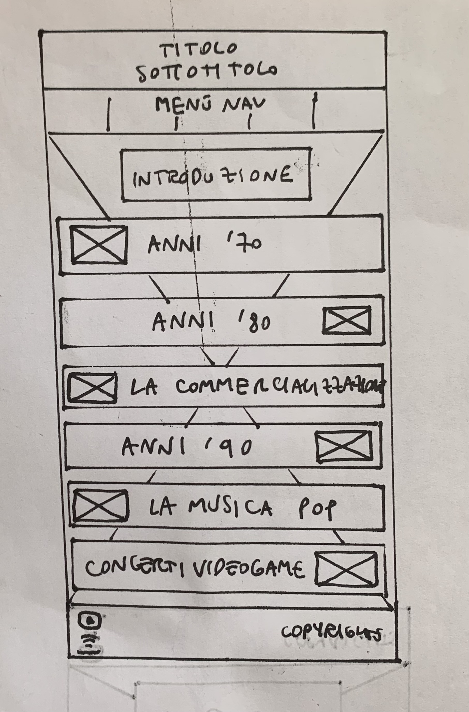
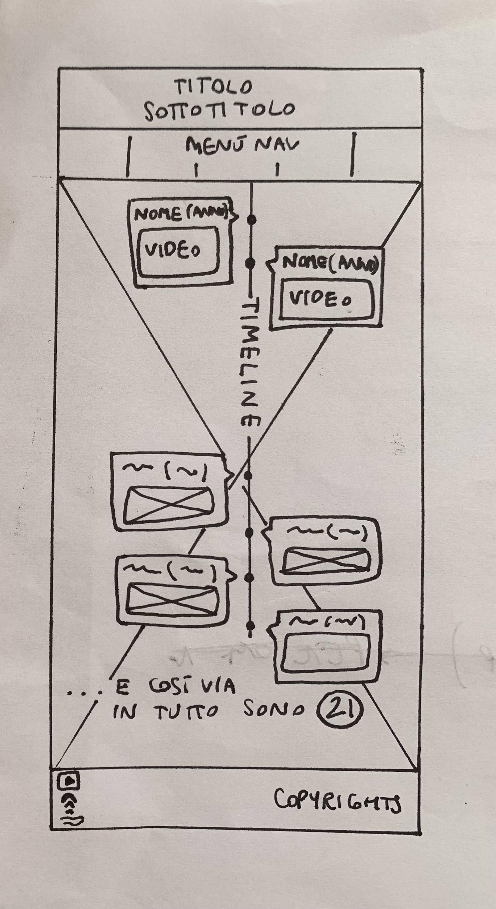
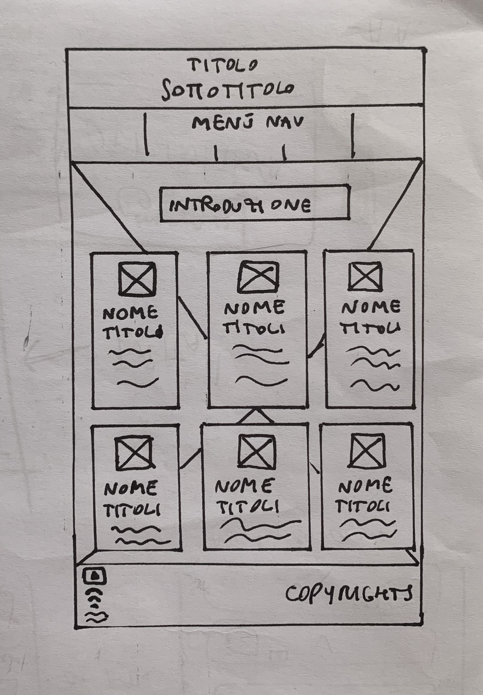
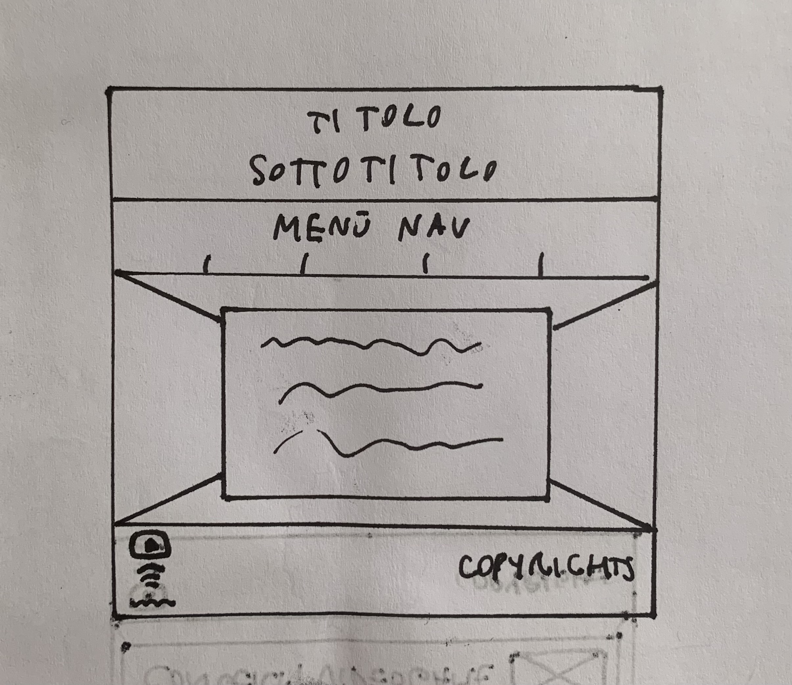

DOCUMENTAZIONE
Abstract
Ho deciso di creare il mio sito sul tema delle colonne sonore dei videogame, per dare un'idea più completa sul loro sviluppo a chi fosse appassionato di musica, videogiochi o entrambi, sottolineando quanto questo elemento sia essenziale per fornire ai giocatori un'esperienza il più immersiva possibile, anche ripercorrendone la storia e i principali compositori.
Project Management Plan
1. Benchmarking
Obiettivi. Il sito ha un intento divulgativo. L'obiettivo principale è informare gli appassionati di musica o videogiochi sull'importanza che le colonne sonore hanno avuto, e hanno tutt'oggi, nell'esperienza dei giocatori, sulla loro storia e sulle musiche e compositori più influenti.
Target. Si rivolge principalmente agli appassionati di questa nicchia, che possono essere sia giovani, sia adulti, essendo i videogame un tipo di intrattenimento che coinvolge tante fasce di persone.
Competitors. I competitors in cui mi sono imbattuta sono stati molto interessanti, ma ciò che mancava era un sito interamente dedicato a questo tema. Sono molto più diffusi articoli che approfondiscono una categoria specifica di questo grande ambito. Inoltre, se a volte le informazioni erano ricche, altre volte lo erano meno.
Dei competitors validi per la storia sono stati "www.thomann.de/blog/it/storia-delle-colonne-sonore-dei-videogames/", che espone molto bene il percorso storico, fornendo anche video esplicativi dei suoni o delle interviste, e musyance.com/la-musica-nei-videogiochi-dalle-composizioni-sempre-piu-complesse-ai-concerti-di-fortnite", che sottolinea anche la componente emotiva. Nella scelta delle colonne sonore, mi sono basata su una mia cultura personale e chiedendo consigli a persone inserite nel mondo videoludico. Però, un competitor di riferimento è stato "artsandculture.google.com/story/yQVh0uNkq_X8IQ", oltre che per la bellezza e l'impatto grafici, anche per i contenuti, e ho reperito notizie miste anche dagli altri siti citati. Infine, per i compositori ho individuato "multiplayer.it/articoli/migliori-compositori-storia-videogiochi.html" in quanto il più esaustivo nell'elencare i nomi più importanti nonostante, a mio parere, non raccontasse abbastanza sulla loro carriera o formazione.
2. Struttura e layout
Architettura del sito

Wireframe
Per la HOME.

Per LA STORIA.

Per LE COLONNE SONORE.

Per I COMPOSITORI.

Per SU DI ME.

Look and feel
Ho deciso di utilizzare una palette di colori freddi (blu e azzurro chiaro/celeste), ma delicati, soprattutto perché si combinano perfettamente agli sfondi inseriti, dato che richiamano la stagione invernale. In questo modo, ho voluto dare l'idea di un sito semplice, ma "accogliente", senza aggiungere grandi banner luminosi, essendo poi un sito divulgativo che non doveva convincere o persuadere, ma solo informare in modo chiaro e coinciso. Infatti, ho inserito diversi box per contenere le informazioni, accoppiate a foto, e nella pagina delle colonne sonore sono inserite per creare una linea del tempo, per dare un'idea di cronologia con lo scorrimento. Infine, come font mi pareva che il Playfair Display serif combaciasse l'atmosfera accogliente, sia nei titoli che nei paragrafi, ma l'ho voluto unire anche al Silkscreen per richiamare la grafica "robotica" utilizzata nei primissimi videogiochi.
3. Linguaggi e strumenti
I linguaggi web utilizzati sono HTML e CSS, mentre ho impiegato: Sublime Text 2 come text editor, Font Awesome per l'icona vicino al title, Google e Flickr per le immagini (con Licenza Creative Commons), W3schools per la timeline nella pagina "Le colonne sonore", Github per la pubblicazione del sito, Google Analytics per vedere le visualizzazioni e YouTube e Spotify per mettere il link alle mie playlist.
Communication Strategy
1. Background
Credo che il mio risultato sia efficace perché, nonostante possa essere graficamente più semplice rispetto ad altri siti (però per questo immediato), racchiude tutte le informazioni essenziali che un appassionato o incuriosito di questo tema potrebbe voler conoscere a riguardo, senza che siano eccessivamente tecniche o prolisse. É accessibile a tutti e mostra un quadro generale, ma completo, dello sviluppo delle colonne sonore dei videogiochi.
Obiettivi comunicativi
Il sito è ovviamente divulgativo, pertanto è nato ed esiste a scopo informativo, per ampliare le conoscenze musicali e videoludiche della audience.
Target audience e messaggio
Il sito ha un target abbastanza ampio e flessibile: persone di tutte le età possono essere appassionate di musica, e in particolare di colonne sonore (soprattutto se riportano alla mente ricordi d'infanzia), mentre sia giovani che adulti sono inseriti nel mondo videoludico, sia per passione o intrattenimento, sia per lavoro, come accade sulla piattaforma Twitch. Proprio per questo, è un sito facilmente rintracciabile tramite social. Siti di questo tipo sono più facilmente raggiungibili proprio su questo tipo di piattaforme, soprattutto perché si parla spesso di questi temi.
Promozione
Ho promosso il mio sito tramite i miei profili personali su Instagram e Whatsapp.
Valutazione dei risultati